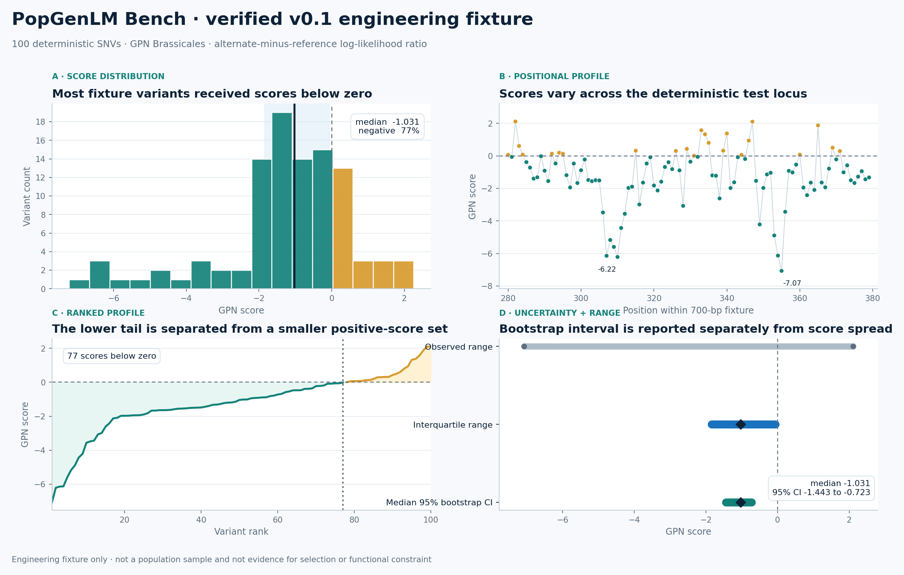

Research and software projects connecting genome variation, evolutionary processes, ecological change, biodiversity, and reproducible scientific computation.
Featured scientific AI project
Open-source scientific AI · verified v0.1 foundation
PopGenLM Bench
A reproducible evaluation framework for testing whether genomic language-model variant scores are technically valid and biologically consistent with population-genetic and evolutionary evidence.
The project connects model inference with reference validation, provenance, allele frequency, conservation, genomic annotation, effect sizes, uncertainty, and explicit interpretation boundaries.
PythonGPNVariant scoringPopulation genomicsReproducibility

Evolutionary and population genomics
How drift, selection, gene flow, demographic history, and environmental change shape genetic variation across time and space.
Current research
Temporal genomics
Temporal genomics detects evolutionary change directly by tracking allele-frequency shifts across generations. Repeated sampling of natural Arabidopsis lyrata populations, separated by approximately two decades, makes it possible to quantify recent genomic change and compare observed shifts with neutral expectations.
Genome-wide analyses examine how much change is consistent with drift, which loci exceed demographic expectations, and whether candidate regions show coherent relationships with environmental trends, functional annotation, or genomic constraint. The broader aim is to understand how standing genetic variation, demography, and selection jointly shape evolutionary responses to rapid environmental change.
Temporal dataGenetic driftSelectionGenomic constraintClimate change
Current research
Hybridisation genomics
Hybridisation generates new genetic combinations, can facilitate adaptation, and may contribute to the formation or collapse of species boundaries. This work investigates hybridisation in Arabis and related Brassicaceae by combining high-throughput sequencing, experimental crosses, field studies, and phenotyping.
Patterns of introgression, ancestry dynamics, segregation distortion, and the architecture of reproductive barriers are used to ask why some genomic regions cross species boundaries while others are retained or removed. Comparative work across experimental and natural hybrid systems provides insight into gene flow, adaptation, and diversification under changing environments.
IntrogressionGene flowReproductive barriersExperimental crosses
Published research
Climate adaptation and seed dormancy
This research examines plant responses to past and present climate change through phylogeography, landscape genetics, and adaptive seed dormancy. Molecular, ecological, and spatial analyses reveal how Quaternary climate oscillations, glacial refugia, recolonisation, and habitat fragmentation have shaped present-day diversity and species distributions.
Experimental studies in Arabidopsis thaliana investigate heat-induced secondary dormancy as an adaptive mechanism that adjusts germination timing to environmental conditions. Together, these lines of work connect historical range dynamics with contemporary trait evolution and help clarify how plants persist under environmental variability.
Local adaptationSeed dormancyLandscape geneticsClimate response
Published research
Phylogeography of Microthlaspi
Range-wide sampling and population-genetic analyses reconstruct the evolutionary history, migration, and genetic structure of Microthlaspi across Eurasia and North Africa. AFLP and sequence data show how climatic heterogeneity, selfing, and fragmented distributions have shaped genetic diversity.
The work revealed that M. erraticum extends from the Alps into Central Asia, while M. perfoliatum survived in multiple Pleistocene refugia and recolonised Europe through complex routes. Central Europe emerged as a contact zone among divergent lineages, illustrating how climate, geography, and historical demography combine to structure present-day biodiversity.
Range dynamicsHistorical demographyPleistocene refugiaMigration
Genome resources and biological interactions
Genome assembly, plant-associated communities, and pathogen evolution across host and environmental contexts.
Current research
High-resolution genomics of plant-microbe systems
This work develops high-quality, chromosome-level genome assemblies for Brassicaceae species and genomic resources for associated phyllosphere bacterial communities. PacBio HiFi, Oxford Nanopore, Hi-C, and Illumina data are integrated to resolve genome structure, gene content, and assembly quality in both host plants and key bacterial hub taxa.
The resulting resources support comparative genomics, functional-gene discovery, and investigations of plant-microbe interactions. They also provide a reliable genomic foundation for downstream population, evolutionary, and community analyses.
Genome assemblyPacBio HiFiOxford NanoporeHi-CPhyllosphere
Published research
Fungal diversity, systematics, and communities
Phylogenetic and morphological analyses clarify fungal diversity in forest and plant-associated systems. Taxonomic work on Cortinarius sect. Riederi and Inocybe subgenus Inocybe resolved overlooked lineages, complex synonymies, and previously unrecognised species.
Community-level research examines root endophytic fungi in non-mycorrhizal Microthlaspi. Large-scale sampling and multilocus data indicate that a small number of dominant fungal groups are widespread across Europe, with environmental gradients contributing more strongly to community structure than host genotype or simple geographic distance.
Fungal systematicsEndophytesCommunity ecologyEnvironmental filtering
Published research
Emergence and evolution of downy mildew pathogens
Field surveillance, molecular phylogenetics, and population genetics are used to study the emergence and spread of downy mildew pathogens affecting ornamental and crop plants in Europe. Work on Peronospora aquilegiicola documented its rapid movement from East Asia into Britain and Germany and evaluated the risk to cultivated and native Aquilegia.
Complementary studies of Pseudoperonospora cubensis and Plasmopara halstedii revealed changes in virulence, host range, lineage structure, and patterns consistent with multiple introductions or host-associated differentiation. These systems show how pathogen evolution, trade, host availability, and dispersal interact to create new agricultural and biodiversity risks.
Disease emergencePopulation structureHost rangePathogen surveillance
Systematics and biodiversity
Published research
Systematics of Microthlaspi and Coluteocarpeae
This project addresses longstanding taxonomic problems in the Brassicaceae tribe Coluteocarpeae, with particular emphasis on Microthlaspi and related genera. Nuclear and chloroplast phylogenies, combined with critical morphological study, clarified relationships among major lineages and supported revised generic boundaries.
The integrative approach revealed cryptic diversity, enabled the recognition and description of new taxa, and produced taxonomic treatments, distribution information, and diagnostic evidence for future research. It demonstrates why molecular data and careful morphological reassessment are most powerful when interpreted together.
PhylogeneticsTaxonomySpecies discoveryMorphology
Research record
Publications and professional experience
Peer-reviewed articles, preprints, manuscripts, teaching, and research roles spanning evolutionary genomics, plant adaptation, phylogeography, systematics, fungal biology, and pathogen evolution.